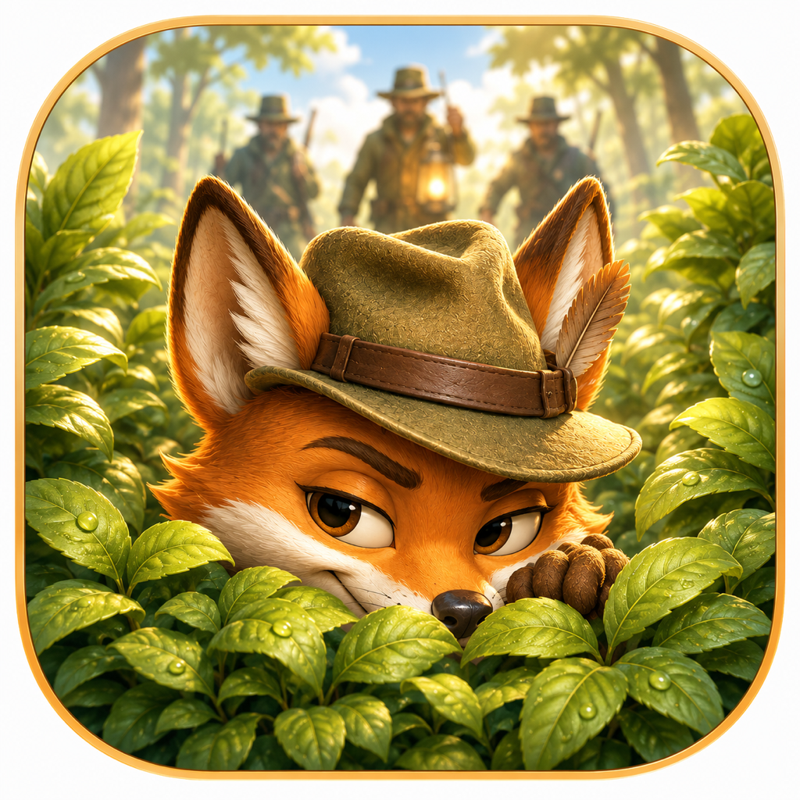
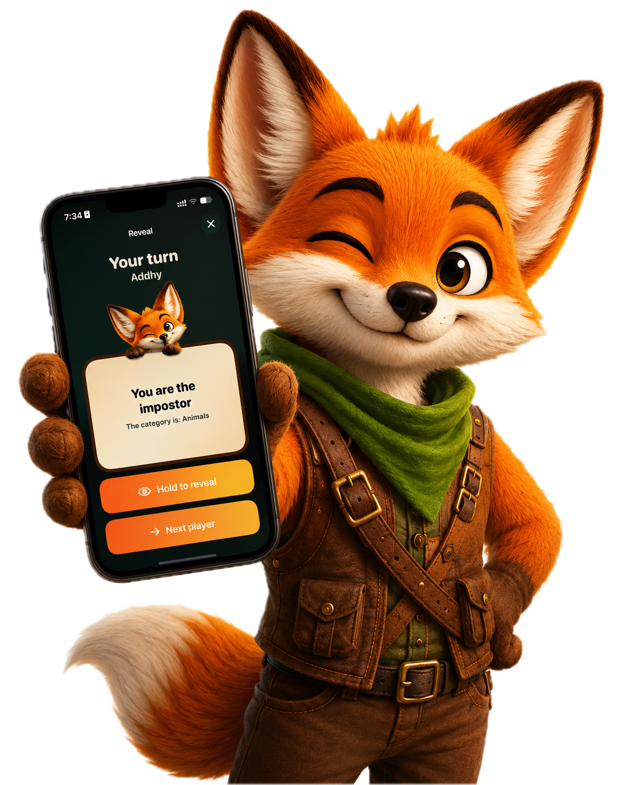
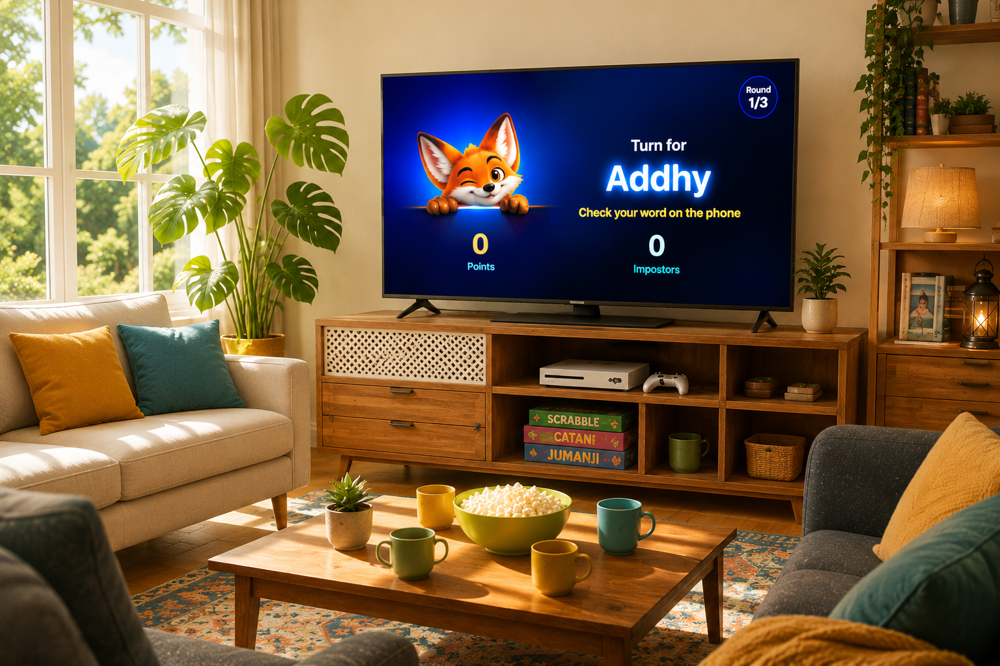
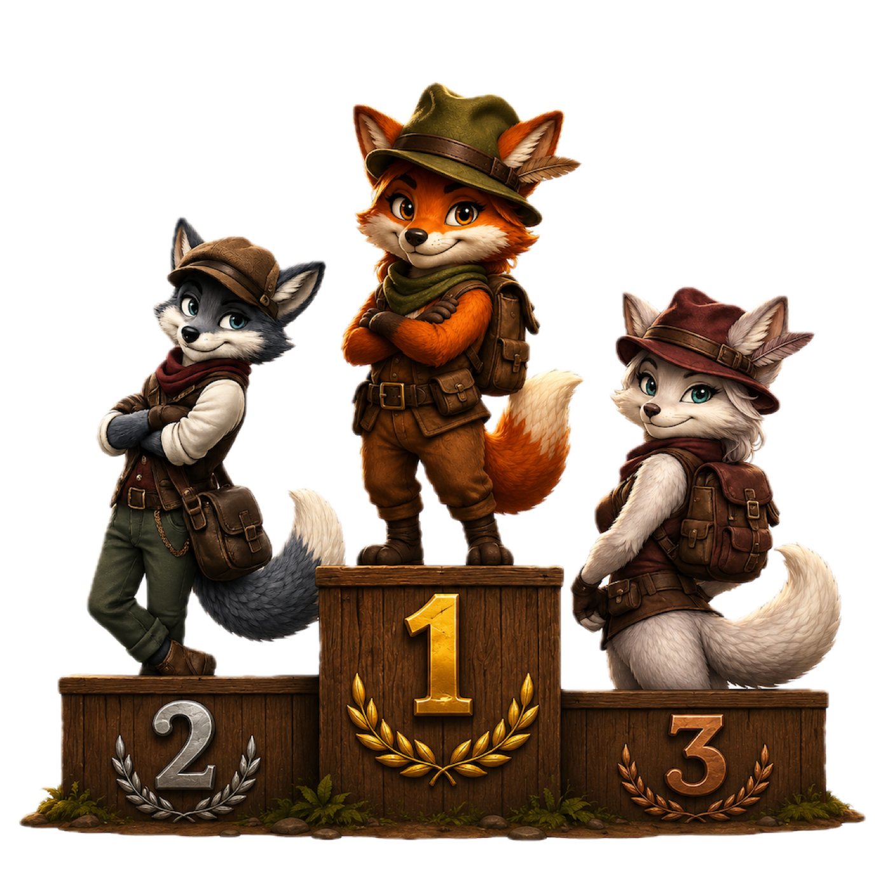

One phone for everyone
No accounts, no matchmaking, no second device. Add names and start in under a minute.
Press Kit
One iPhone. A room full of hunters. One hidden fox.
A local pass-and-play party game for iPhone and iPad. Everyone gets the same secret word except the fox, who has to bluff through the clues before the group votes. An optional TV scoreboard turns the living room into a game show.
Kit de prensa
Un iPhone. Una sala llena de cazadores. Un zorro escondido.
Un juego de fiesta local para iPhone y iPad en el que se pasa el teléfono de mano en mano. Todos reciben la misma palabra secreta excepto el zorro, que tiene que disimular entre las pistas antes de que el grupo vote. Un marcador opcional en la TV convierte la sala en un programa de concursos.
Fact sheet
Ficha técnica
About the game
Fox vs Hunters is a social deduction game for families and friends who are in the same room. Players pass one iPhone around and reveal their card in private. Hunters see the secret word; the fox only knows the category. Everyone gives a clue, the fox tries to blend in, and the group votes. Catch the fox and the hunters win. Let it slip away and the foxes take the round.
No accounts, no matchmaking, no second device. Add names and start in under a minute.
With AirPlay, the TV shows turns, votes, scores and the final reveal, while secret words stay on the iPhone.
On devices with Apple Intelligence, the game suggests new categories and word lists in the game language. Without it, players write their own.
Family nights, classrooms, trips and parties. Multiple rounds, several hidden foxes and saved scores.
Sobre el juego
Zorros vs Cazadores es un juego de deducción social para familias y amigos que están en el mismo lugar. Se pasa un iPhone de mano en mano y cada quien revisa su tarjeta en privado. Los cazadores ven la palabra secreta; el zorro solo conoce la categoría. Todos dan una pista, el zorro intenta pasar desapercibido y el grupo vota. Si atrapan al zorro, ganan los cazadores. Si se les escapa, la ronda es de los zorros.
Sin cuentas, sin emparejamiento y sin un segundo dispositivo. Agregas nombres y empiezan en menos de un minuto.
Con AirPlay, la TV muestra turnos, votos, puntos y la revelación final, mientras las palabras secretas se quedan en el iPhone.
En dispositivos con Apple Intelligence, el juego sugiere categorías y listas de palabras en el idioma de la partida. Sin ella, los jugadores escriben las suyas.
Noches en familia, salones de clase, viajes y fiestas. Varias rondas, más de un zorro escondido y puntajes guardados.
Assets
Free to use in coverage of Fox vs Hunters. Click any image to download it at full size.
Arte
Libres de uso para notas y reseñas de Zorros vs Cazadores. Haz clic en una imagen para descargarla en tamaño completo.

App icon · PNG 1024×1024
Fox mascot · PNG
Key art · PNG 1536×1024
TV scoreboard · PNGContact
For press questions, interviews or a Premium code to review the full game, write to hola@misaellandero.com. Replies in English or Spanish.
Contacto
Para preguntas de prensa, entrevistas o un código Premium para reseñar el juego completo, escribe a hola@misaellandero.com. Respondo en español o inglés.